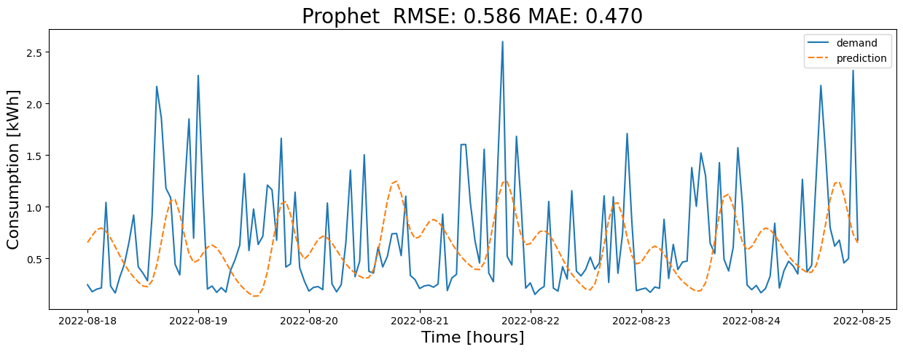

🔮 Time-Series Forecasting with Prophet#
Prophet models time series as trend + seasonalities + holidays/regressors, with automatic changepoints for level shifts. It’s great for business/energy data with clear daily/weekly/yearly cycles and simple to extend with holidays or weather.
Strengths: quick setup, interpretable components, built-in cross-validation and uncertainty intervals.
Watch-outs: may underfit highly irregular patterns; needs careful frequency/TZ handling; multiplicative seasonality often better for energy.
Key knobs: changepoint_prior_scale (trend flexibility), seasonality_mode (additive vs multiplicative), seasonality_prior_scale, holidays_prior_scale, growth (linear/logistic).
This tutorial turns Prophet into a clean, reproducible baseline for energy forecasting.
Prophet models trend + multiple seasonalities + holidays/regressors, with robust handling of changepoints.
What you’ll learn
📥 Prepare data in Prophet’s format (
ds,y)🧭 Add daily/weekly/yearly seasonality and holidays
📈 Control trend & changepoints (sudden level shifts)
➕ Add extra regressors (temperature, events)
✂️ Time-aware train/validation split & cross‑validation
📏 Metrics & diagnostic plots
🎛️ Key knobs: growth, seasonality mode, priors
Mental model: Prophet =
y(t) = trend(t) + Σ seasonality_k(t) + holiday(t) + regressors(t) + noise.
🛠️ Setup & Imports#
We use pandas/numpy for data; matplotlib for plots; and prophet (or fbprophet in older versions) for the model.
Check your install: pip install prophet (CPU only) or conda install -c conda-forge prophet.
🔁 Cross‑Validation (Prophet Diagnostics)#
Use built‑in utilities:
from prophet.diagnostics import cross_validation, performance_metrics
df_cv = cross_validation(m, initial="365 days", period="30 days", horizon="30 days")
df_p = performance_metrics(df_cv)
This performs rolling‑origin evaluation and computes MAE/RMSE/MAPE and more.
📏 Evaluation & Uncertainty#
Report MAE, RMSE, MAPE.
Prophet also provides uncertainty intervals (yhat_lower, yhat_upper).
Compare against Lag‑7, LR, RF, SVR baselines.
import pandas as pd
import numpy as np
import datetime
import matplotlib.pyplot as plt
import seaborn as sns
from sklearn.metrics import mean_absolute_percentage_error
from sklearn.metrics import mean_absolute_error
from sklearn.metrics import mean_squared_error
from prophet import Prophet
from prophet.diagnostics import cross_validation
from prophet.diagnostics import performance_metrics
import warnings
warnings.filterwarnings('ignore')
Read datasets#
📥 Load & Prepare Data#
Prophet expects a DataFrame with two columns:
ds: datestamp (pandas datetime)y: target value (e.g., kWh / kW)
Ensure the timezone/frequency is consistent and gaps are handled.
🕒 Time Index & Frequency#
Align to a steady frequency (hourly/daily).
Handle DST carefully: prefer UTC for modeling, then convert for display if needed.
dataset = pd.read_csv('data/kaggle_competition_dataset.csv',
parse_dates=['time'])
dataset.set_index('time', inplace=True)
dataset.info()
<class 'pandas.core.frame.DataFrame'>
DatetimeIndex: 8592 entries, 2021-09-01 00:00:00 to 2022-08-24 23:00:00
Data columns (total 12 columns):
# Column Non-Null Count Dtype
--- ------ -------------- -----
0 temp 8592 non-null float64
1 dwpt 8592 non-null float64
2 rhum 8592 non-null float64
3 prcp 2159 non-null float64
4 snow 119 non-null float64
5 wdir 8592 non-null float64
6 wspd 8592 non-null float64
7 wpgt 8592 non-null float64
8 pres 8592 non-null float64
9 coco 8396 non-null float64
10 el_price 8592 non-null float64
11 consumption 8592 non-null float64
dtypes: float64(12)
memory usage: 872.6 KB
Features#
demand = dataset[['consumption']]
demand = demand.rename(columns = {'consumption':'demand'})
demand.head()
| demand | |
|---|---|
| time | |
| 2021-09-01 00:00:00 | 0.577 |
| 2021-09-01 01:00:00 | 0.594 |
| 2021-09-01 02:00:00 | 0.685 |
| 2021-09-01 03:00:00 | 1.016 |
| 2021-09-01 04:00:00 | 0.677 |
time_data = demand.copy()
time_data = time_data.drop(columns=['demand'])
time_data['ds'] = pd.to_datetime(time_data.index.values, dayfirst=True)
dataset = demand.join(time_data)
dataset.rename(columns={'demand': 'y'}, inplace=True)
#dataset.reset_index(drop=True, inplace=True)
dataset.tail()
| y | ds | |
|---|---|---|
| time | ||
| 2022-08-24 19:00:00 | 0.678 | 2022-08-24 19:00:00 |
| 2022-08-24 20:00:00 | 0.457 | 2022-08-24 20:00:00 |
| 2022-08-24 21:00:00 | 0.500 | 2022-08-24 21:00:00 |
| 2022-08-24 22:00:00 | 2.321 | 2022-08-24 22:00:00 |
| 2022-08-24 23:00:00 | 0.678 | 2022-08-24 23:00:00 |
Forecast#
📅 Seasonality & Holidays#
Built‑in seasonalities: daily/weekly/yearly; you can add custom ones (e.g., 24h, 168h).
Add holidays via a DataFrame or
add_country_holidays(country_name="EE")for Estonia.
➕ Extra Regressors#
Add weather or operational features:
m.add_regressor("temperature", standardize=True, prior_scale=5.0)
Ensure regressors are known (or forecasted) for the future horizon.
✂️ Train / Validation / Test Split#
Split chronologically. Fit Prophet on train, make future DataFrame for validation/test horizon using m.make_future_dataframe(periods=H).
predict_days = 7
training_data_length = 14
last_dataset_day = dataset.index.max().date()
prediction_start = pd.to_datetime(last_dataset_day - pd.Timedelta(days=predict_days-1))
# (Optional) resample to daily if you want day-ahead with daily y
# dfp = dfp.set_index("ds").resample("D").sum().reset_index()
# Build Prophet model; add seasonality as needed
m = Prophet(
daily_seasonality=True, # set to True if sub-daily data
weekly_seasonality=True,
yearly_seasonality=False
)
# (Optional) extra regressors—if you have them in dataset, add and include in dfp
# for reg in ad_fs:
# m.add_regressor(reg)
# dfp[reg] = dataset[reg].values # make sure aligned
# Fit on the full df (CV will internally refit on each cutoff subset)
# from the official prophet documentation: "Prophet will by default fit weekly and yearly seasonalities, if the time series is more than two cycles long.
# It will also fit daily seasonality for a sub-daily time series."
# I also manually added the trend changepoint detection parameter to make the model more flexible and added country-specific holidays.
m.add_country_holidays(country_name='EE')
m.fit(dataset)
# Built-in CV: rolling 14-day train, 1-day horizon, step 1 day
df_cv = cross_validation(
m,
initial=f"{training_data_length} days",
period="1 days",
horizon="1 days",
parallel=None # set to "processes" to speed up if desired
)
# Keep only the last 7 forecasted days (yhat for the day after each cutoff)
mask_last7 = (df_cv["ds"].dt.date >= prediction_start.date()) & (df_cv["ds"].dt.date <= last_dataset_day)
df_cv_last7 = df_cv.loc[mask_last7].copy()
# Metrics (overall for those 7 days)
df_pm = performance_metrics(df_cv_last7, rolling_window=1) # no smoothing
overall_mae = df_pm["mae"].mean()
overall_mape = df_pm["mape"].mean()
overall_rmse = df_pm["rmse"].mean()
print({"MAE": overall_mae, "MAPE": overall_mape, "RMSE": overall_rmse})
# If you want aligned actual/forecast series:
actual_full = df_cv_last7[["ds", "y"]].set_index("ds").rename(columns={"y": "demand"})
forecast_full = df_cv_last7[["ds", "yhat"]].set_index("ds").rename(columns={"yhat": "prediction"})
📊 Plots & Diagnostics#
Forecast with intervals
Components plot (trend, weekly, yearly, holidays)
Residuals over time; error by hour/DoW/temperature bins for structure
mapestring="MAPE: %.3f" % (overall_mape*100)
maestring="MAE: %.3f" % (overall_mae)
rmsestring = "RMSE: %.3f" % (overall_rmse)
print(mapestring+" "+maestring+" "+rmsestring)
plt.figure(figsize=(15,5))
p = sns.lineplot(data = actual_full.join(forecast_full));
plt.title("Prophet " +" "+rmsestring+" "+maestring,fontsize = 20)
p.set_xlabel("Time [hours]", fontsize = 16);
p.set_ylabel("Consumption [kWh]", fontsize = 16);
MAPE: 100.593 MAE: 0.470 RMSE: 0.586
